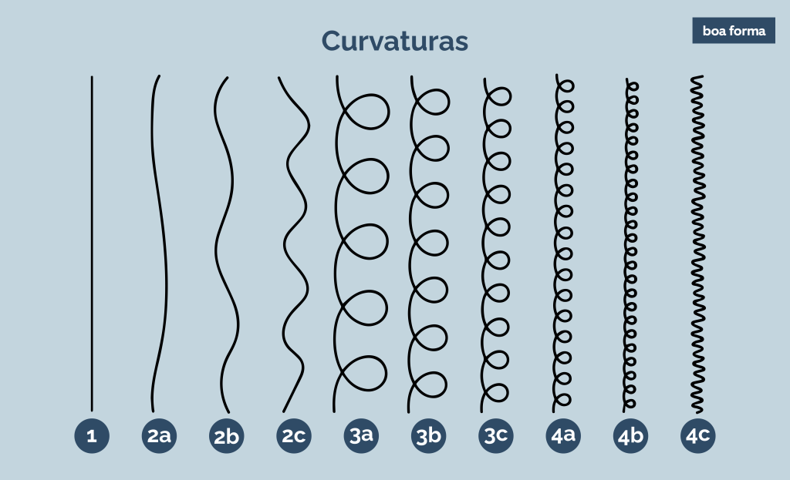

Ao pensarmos no conceito de beleza, uma série de imagens podem vir à nossa mente, associando essa palavra a um elemento em comum: um vínculo direto às características (físicas e culturais) de padrões eurocêntricos, ou seja, relacionadas às pessoas brancas. Por isso, a Beleza Negra, enquanto um movimento, surge para quebrar essa associação e fazer com que traços e referências negras sejam valorizados. Trata-se, portanto, do reconhecimento, valorização e exaltação do que é ser negro, sejam pele, cabelo, estilo, música, dança ou elementos diversos que evidenciam a identidade negra. É a visão que quebra o padrão europeu, há muito determinado como o ideal, e coloca em evidência o que é inerente e único de um povo desumanizado por séculos em razão do racismo estrutural. Portanto, Beleza Negra é menos sobre simplesmente considerar uma pessoa negra bonita ou atraente. É enxergá-la enquanto um ser humano potente e capaz de ser modelo para outras pessoas e gerações. Beleza negra
O que é beleza negra?
Como reconhecer a beleza negra em si próprio?
Apesar das várias referências que temos hoje de pessoas negras que são valorizadas e celebradas por seus talentos e sua beleza, nem sempre foi assim. O racismo estrutural – intrinsecamente presente na cultura, política e sociedade como um todo – moldou um ideal do que pode ser visto como bonito e de bom gosto, e as pessoas negras não estavam incluídas nessa equação. Por esse motivo, reconhecer a si como belo ou bela pode ser uma tarefa mais complexa do que parece. Apesar disso, algumas dicas que podem ajudar são: procure por pessoas negras parecidas com você para seguir nas redes sociais e usá-las como referência de estilo e comportamento; cerque-se de pessoas que reconheçam a Beleza Negra em você e reafirmem isso; aprecie elementos da cultura negra, como a dança, a comida, a música; observe-se e perceba quais são os traços do seu corpo e/ou da sua personalidade que são belos e celebre-os! Como vimos, o conceito de Beleza Negra vai muito além da estética: é sobre autoestima e autoaceitação. Por isso, valorizar esse movimento e incentivar que mais pessoas negras reconheçam em si mesmas a beleza que, muitas vezes, não conseguem enxergar, é também contribuir para uma geração de pessoas mais felizes e um exemplo de luta direta no combate ao racismo.
Tranças Masculinas e Femininas
As tranças são um penteado que nunca sai de moda, e que pode ser usado por homens e mulheres. Elas são versáteis e podem ser feitas de diversas formas, com diferentes tipos de cabelo e comprimentos. As tranças masculinas e femininas são uma ótima opção para quem quer mudar o visual e dar um toque de estilo ao cabelo. Além disso, as tranças são práticas e fáceis de fazer, e podem ser usadas em diversas ocasiões, desde o dia a dia até eventos mais formais. Se você está pensando em adotar as tranças no seu visual, confira algumas dicas e inspirações para arrasar com esse penteado.
Galeria de Fotos


Produtos


Tipos de Cabelo
Trabalhamos com varios produtos